“Style is a way to say who you are without having to speak.” — Rachel Zoe
It’s something that becomes obvious the longer you spend around cars and the people behind them. Some focus on heritage and continuity, others on experimentation, styling, speed, or reinterpretation. Even when the enthusiasm is shared, the way it gets expressed can look completely different depending on who’s behind the wheel — or in this case, behind the booth.
Held on 2nd May, the Senka 47 × RCNC Autoshow brought together multiple groups, manufacturers, and interpretations of car culture across several maps within Midnight Racing Tokyo. After hearing about the event through Frankie, RCNC’s owner, I reached out to Snehal, the owner of Senka 47, for further details and entered through Senka 47’s side of the autoshow, as RCNC’s section had already reached capacity. It’s also important to clarify that this perspective is limited to the Senka 47 side of the autoshow itself. RCNC’s section existed separately, and without any direct Aoiseikou presence there throughout the evening, it would be dishonest to write about experiences we weren’t present to observe firsthand.
The meet —
Stepping into the event didn’t feel like entering a single place. It felt spread across different environments, each carrying its own atmosphere and interpretation of what a “build” should represent. At first glance, everything appeared complete. Cars were arranged carefully, identities were already established, and every booth had something distinct it wanted to express.
What took longer to understand was not the lack of direction, but the sheer number of them. Manufacturer stages, tuner booths, and concept displays all occupied the same space at once, each representing a different side of automotive culture. The longer we stayed, the more the autoshow stopped feeling like a single scene and started feeling like multiple conversations happening simultaneously.
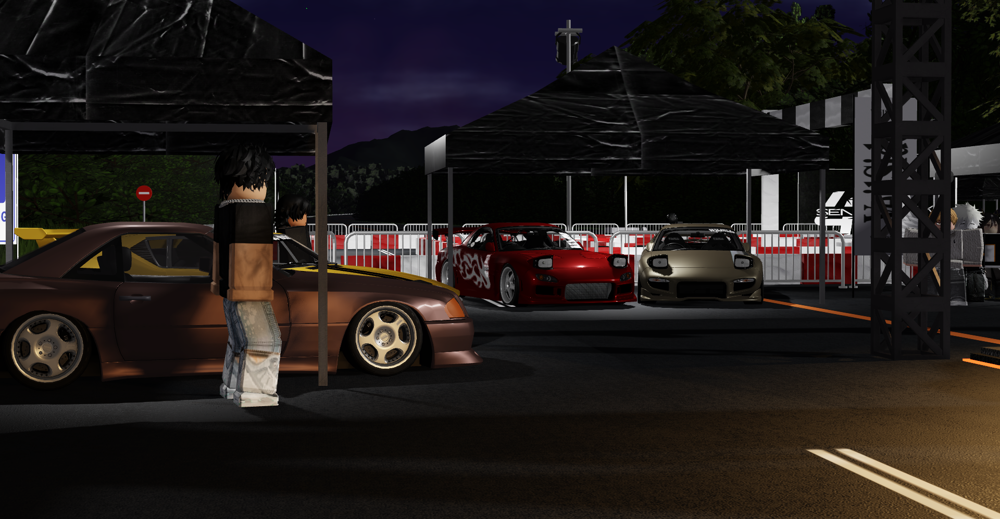
One of the more unusual presences throughout the evening came from the Toyota FT-1. Unlike the larger manufacturer-focused setups, there was no dedicated Toyota stage surrounding it. It existed almost independently within the autoshow, which made it stand out even more.
Concept cars always carry a different atmosphere compared to production cars. They feel less tied down by realism, which is probably why the FT-1 stood out despite not having a full Toyota booth around it. Even surrounded by larger displays, it still managed to feel distinct — almost like a preserved idea from another era of Toyota design.
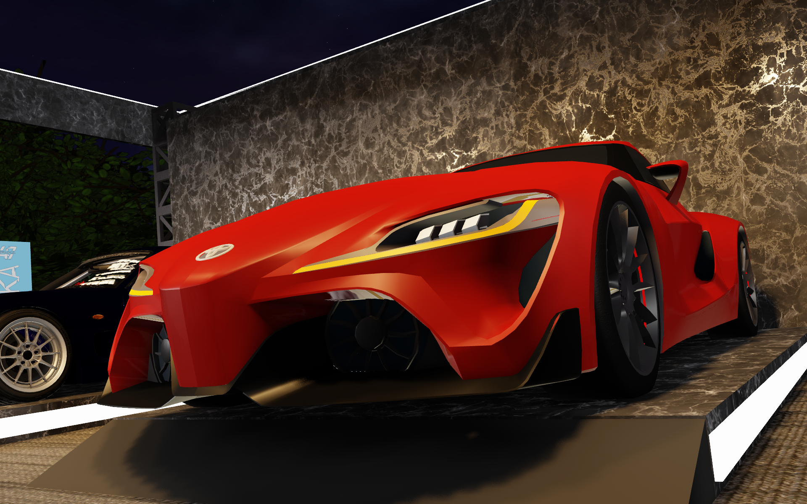
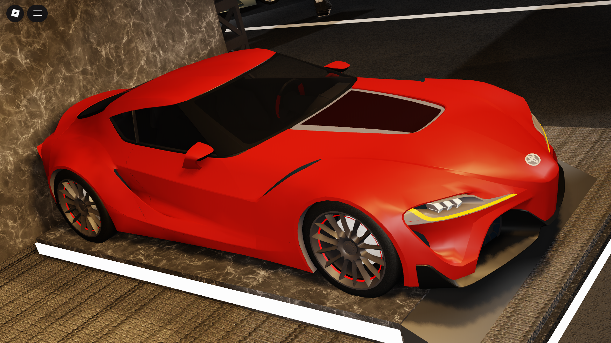
In contrast, Nissan’s presence felt much more grounded in continuity. Their stage brought together a bunch of R35 GT-R Nismos, Skyline GT-Rs and a Silvia S13 creating a direct connection between older and newer generations of performance cars. The lineup was definitely showing the range of models Nissan has, and used to have.
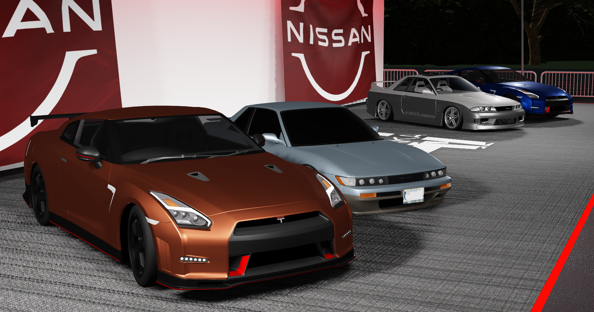
Beyond the larger booths, smaller details throughout the autoshow helped the space feel more complete. A karting track occupied part of the venue, adding movement and activity between the static displays, while an older-generation Formula One car placed within one of the sitting areas quietly stood out as one of the more unexpected inclusions of the evening. Moments like these helped the event feel less like a straightforward showcase and more like an environment built around different corners of automotive enthusiasm.
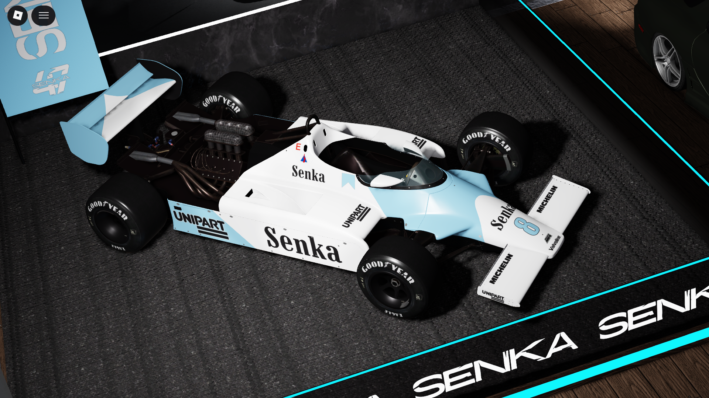
Smaller individual builds throughout the autoshow added character to the evening as well. A two-tone Nissan Skyline GT-ST (R32) and Toyota Altezza parked beside one another immediately stood out, both cars sharing white upper body sections that gave the pair a surprisingly cohesive look despite being completely different platforms. Elsewhere, a De Tomaso Pantera appeared almost unexpectedly among the predominantly Japanese lineup, while cars like a mint-green Porsche 911 (993) parked beside a white Aston Martin DBS quietly reinforced how broad the autoshow’s overall atmosphere really was.
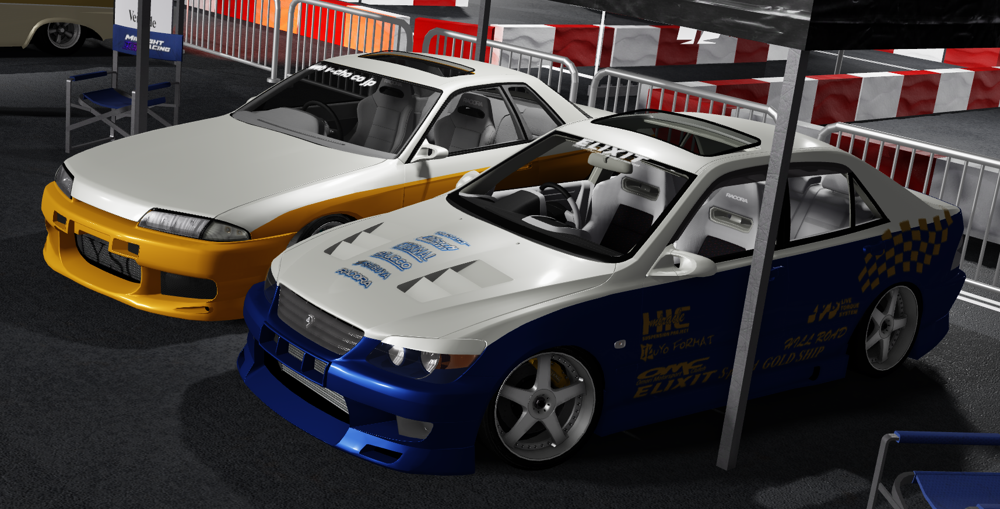
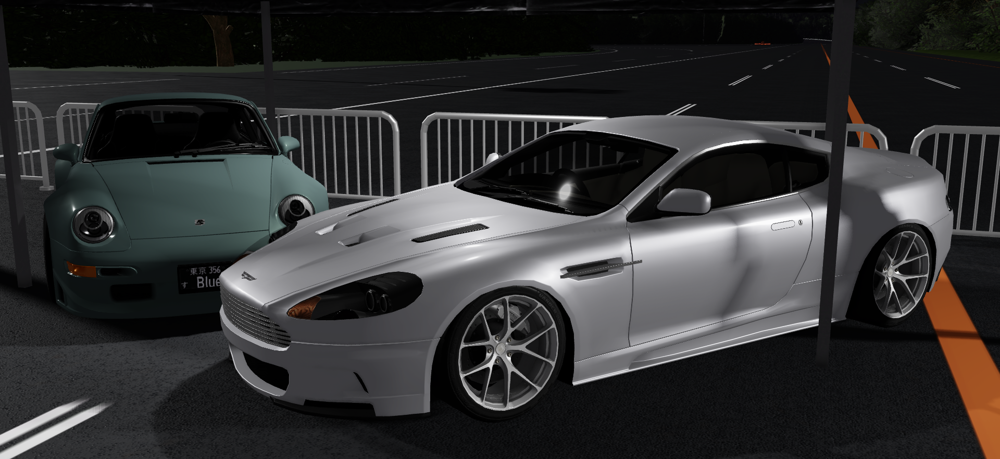
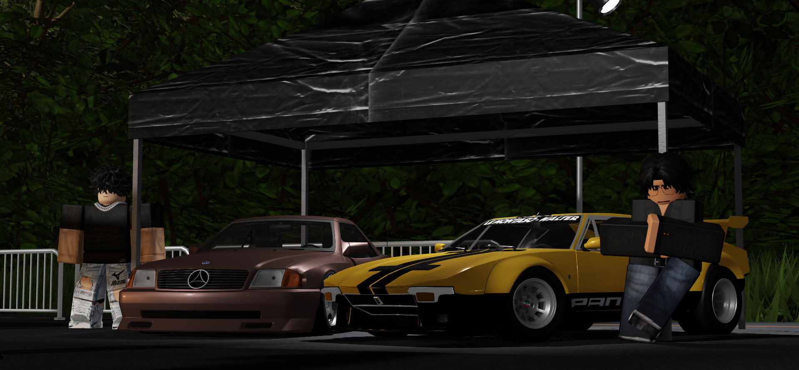
Elsewhere, the tuner booths approached identity from an entirely different angle.
VeilSide’s space remained focused exclusively on the Mazda RX-7 (FD3S), with three separate builds occupying the booth. Instead of focusing on variety, the lineup emphasized a very specific visual style. Even though all three cars shared the same platform, VeilSide’s styling language remained strong enough to make the booth feel cohesive rather than repetitive.
VeilSide’s space remained focused exclusively on the Mazda RX-7 (FD3S), with three separate builds occupying the booth. Instead of focusing on variety, the lineup emphasized a very specific visual style. Even though all three cars shared the same platform, VeilSide’s styling language remained strong enough to make the booth feel cohesive rather than repetitive.
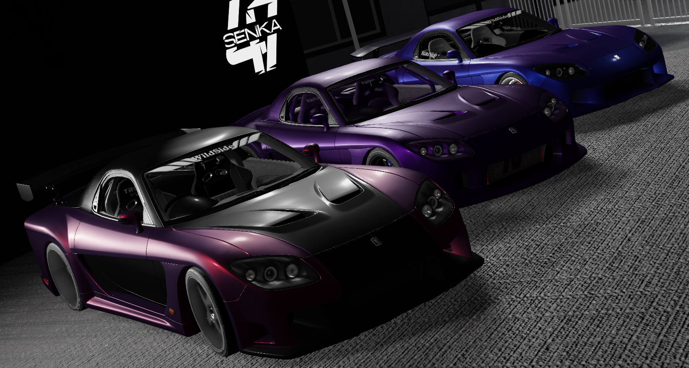
Top Secret carried a completely different energy. Their booth brought together multiple Nissan Skyline GT-R (R34)s alongside a Toyota Altezza. Compared to VeilSide’s more visually aggressive approach, Top Secret’s lineup felt more grounded in classic high-speed tuning culture. The R34s immediately brought to mind Wangan-inspired builds, while the Altezza added something quieter to the space without feeling out of place.
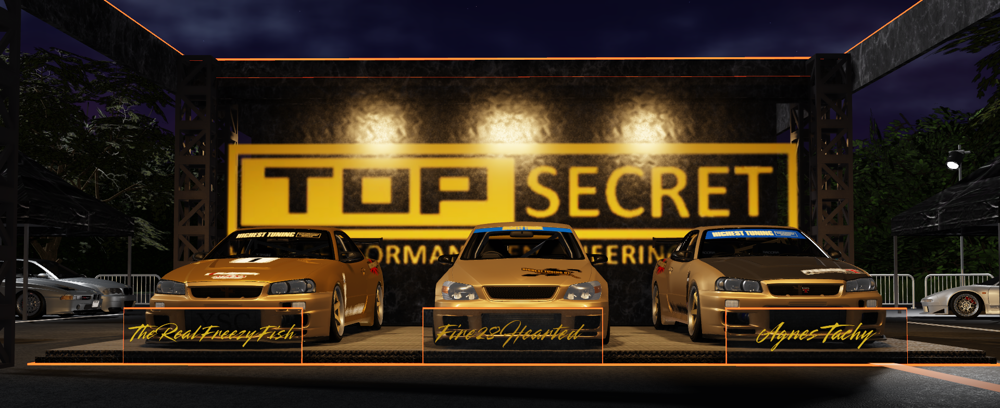
What made both booths interesting was how differently they approached the same enthusiasm for cars. VeilSide focused more heavily on visual transformation and styling identity, while Top Secret’s lineup leaned more toward performance culture and recognizable tuner heritage. Even within the same autoshow, the contrast between the two approaches was easy to notice.
The more time spent moving between these booths, the clearer it became that the autoshow wasn’t trying to present one single definition of car culture. Different groups approached the space in completely different ways, and that variety ended up becoming one of the event’s strongest qualities.
Somewhere within all of this, Aoiseikou had a booth of its own.
Represented throughout the evening by Mason and Demo, the space revolved around two cars: the BMW M3 CSL (E46) and the 858 CSL — a reinterpretation of the BMW 850CSi (E31) built around the idea of what an older BMW flagship might have looked like had the CSL philosophy extended further upward through the range.
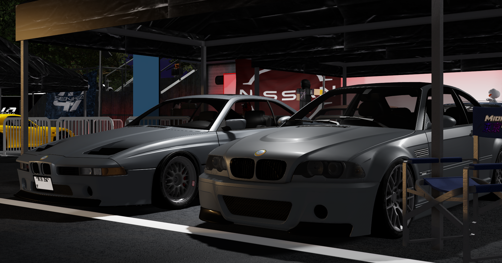
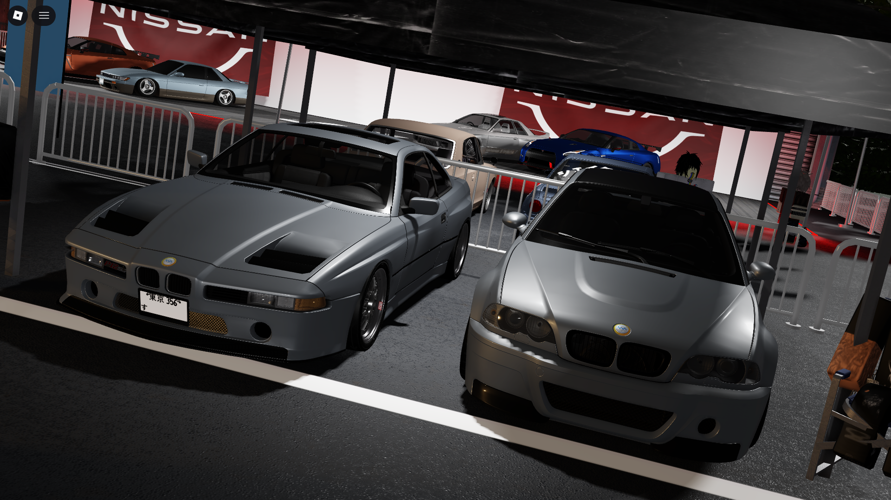
Unlike the concept-oriented atmosphere surrounding cars like the FT-1, the intention behind the 858 CSL was not to create something completely detached from use. The car retained OEM serviceability, a full interior, and the ability to function beyond display alone. It was modified, but still designed around the idea that it should remain usable and believable as a complete car rather than just a visual concept.
It would be easy to write about all of this as if Aoiseikou already possessed complete clarity of its own. The reality is less certain than that. The community is still small, still developing, and still figuring out what parts of car culture it truly wants to carry forward. But maybe that uncertainty is part of what made the autoshow interesting in the first place.
What made the autoshow interesting was not any single booth or platform, but the variety of cars in display. Even within the same event, every group approached car culture in its own way, and that variety gave the evening its character. Naturally, there were plenty of other cars and booths throughout the autoshow that could have been discussed as well. These were simply the ones that stayed in mind the longest after the evening ended.
Thank you for reading.
If you attended the autoshow as well, feel free to share your own perspectives and experiences from the evening in the discord!